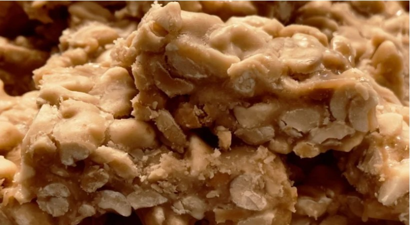
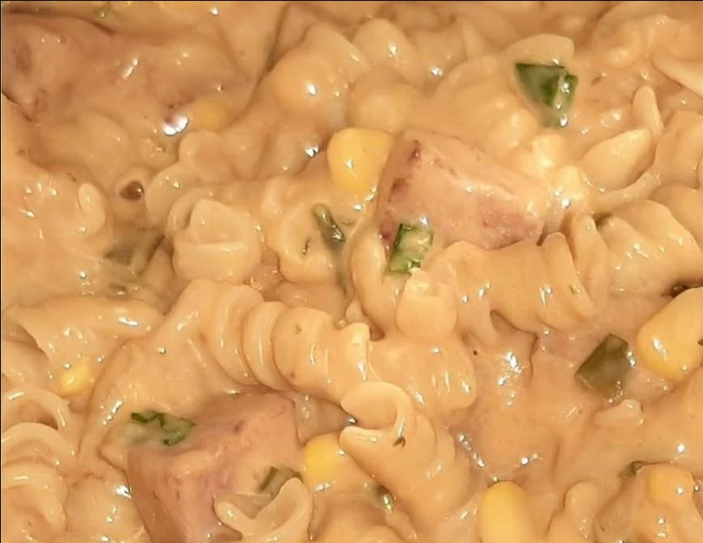

Ingredientes (8 porções)
- 1 lata de leite condensado
- 1 lata de leite (use a lata de leite condensado como medida)
- 3 ovos inteiros
- 1 xícara de açúcar para a calda
Pudim
- 1 xícara (chá) de açúcar
- 1/2 xícara (chá) de água
Calda
- Forma de pudim
- Panela
- Liquidificador
- Espatula
- Prato de sobremesa
Utensílios
Modo de Preparo
- Bata bem os ovos no liquidificador.
- Adicione o leite condensado e o leite, e bata novamente.
- Derreta o açúcar na panela até ficar moreno, acrescente a água e deixe engrossar.
- Coloque em uma forma redonda e despeje a massa do pudim por cima.
- Asse em forno médio por 45 minutos, com a assadeira redonda dentro de uma maior com água.
- Espete um garfo para ver se está bem assado.
- Deixe esfriar, desenforme e leve à geladeira por 4 horas antes de servir.
Pudim
Calda
2. Pé de Moleque de Leite Condensado

Ingredientes (30 porções)
- 500g de amendoim
- 1 lata de leite condensado
- 1 xícara de açúcar
- Panela
- Pincel de silicone
- Colher de pau
- Travessa de vidro
Utensílios
Modo de Preparo
- Torre o amendoim retire a casca.
- Coloque em uma panela, acrescente o açúcar e o leite condensado.
- Leve ao fogo e mexa até começar desgrudar do fundo da panela.
- Em seguida despeje em uma forma untada com óleo.
- Deixe esfriar um pouco e corte em quadradinhos.
3. Macarrão da Panela de Pressão

Ingredientes (10 porções)
- 500g de carne moída
- 1 pacote de macarrão parafuso
- 1 lata de molho de tomate tradicional
- 1 tablete de caldo de carne
- 1 tablete de caldo de tomate
- 1 lata de creme de leite
Modo de Preparo
- Tempere a carne a gosto e deixe que ela cozinhe com a própria água.
- Adicione o caldo de carne e o de tomate, deixe a carne cozinhar até secar toda a água e acrescente o molho de tomate.
- Aguarde levantar fervura, despeje o macarrão e misture bem.
- Despeje água até cobrir todo o macarrão e coloque a tampa na panela de pressão.
- Após o início da pressão, desligue a panela, tire a pressão, misture o creme de leite e coloque em um refratário.
- Está pronto para servir!